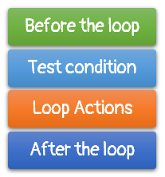

Implementing the Plan
How do you put your plan into action? What tactics do you use to implement your strategy? Start by looking at the loop topology.

Examine this guarded loop. You can see that there are
- actions that occur before the loop is encountered
- a test that determines whether the loop is entered
- actions that occur inside the loop body
- actions that occur after the loop is complete
These four "faces" of a loop are called the precondition, the bound, the action or operation and the postcondition.
Remember these terms; we'll use them to determine exactly where to start working on our loop.
 This course content is offered under a
CC
Attribution Non-Commercial license. Content in this course
can be considered under this license unless otherwise noted.
This course content is offered under a
CC
Attribution Non-Commercial license. Content in this course
can be considered under this license unless otherwise noted.